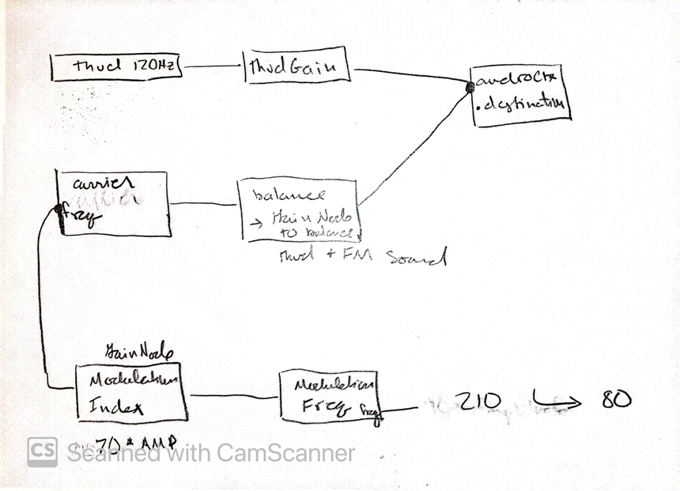

Play Gurgling Noise (click again to stop).
Part I:
Part II:
If there is no sound, reload the page or double click.
I followed the designing sound reading, Practical 7, to make the sound of a bouncing ball. First, I created linear functions to update each important bounce parameter, total single bounce time, amplitude, and sound decay time. I passed updated versions of these parameters into the single bounce function after the total single bounce time using setTimeout(). A single bounce takes place within the total single bounce time passed into the function and is made up of a thud sound at 120Hz as well as a frequency modulated sound. The attack and decay part of the ADSR envelope on the thud takes places within a "hit" time, which is the total bounce time minus the decayTime. The sustain and release parts of the envelope then happen in the decay time.
A frequency modulated sound is played at the same time as the 120hz thud. The carrier frequency of this sound is connected to modulation frequency and gain nodes with the goal of the carrier frequency exponentially sweeping from (210 to 80 hz) times 70 Hz, times an amplitude variable that is updated an decreases between each call to the single bounce function. These two sounds are balanced with individual gain nodes and then sent to the output.
The final issue with my code that I can't seem to fix is that the carrier frequency does not update and is stuck at the default value despite being connected to the modulation index node.
